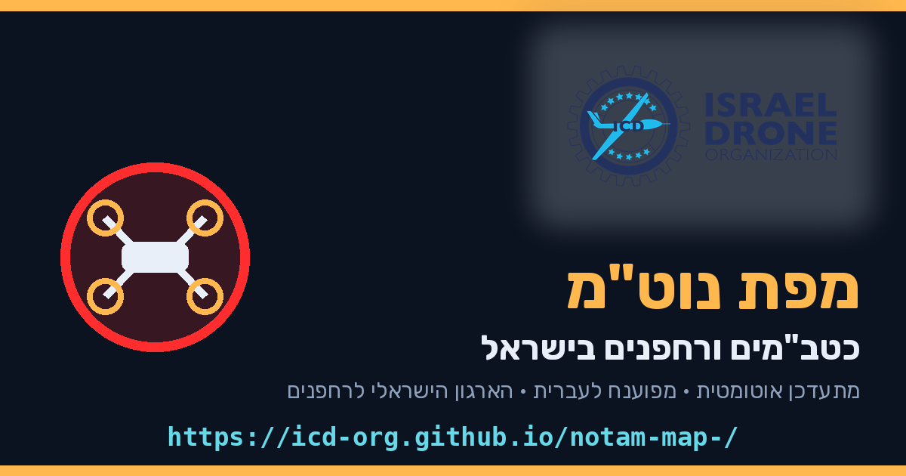

מפת נוט״מ — כטב״מים ורחפנים
כל הנוטמים הפנים-ארציים של רש״ת על מפה אחת · מפוענחים לעברית · מתעדכן אוטומטית פעמיים ביום

🎁 3 חודשים ראשונים — חינם לגמרי
לאחר תקופת הניסיון: ₪25 בלבד לשנה · אפשר לבטל בכל רגע · התשלום תומך בפעילות הארגון למען קהילת הרחפנים
הצטרפו עכשיו — התחילו בחינם
כבר חברים? הכניסה למפה נמצאת באזור החברים באתר הארגון
🗺 מפה חיה
כל האזורים הסגורים בצבעים לפי קטגוריה: כטב״מים, הצנחות, ירי, מנופים, שדות תעופה
כל האזורים הסגורים בצבעים לפי קטגוריה: כטב״מים, הצנחות, ירי, מנופים, שדות תעופה
🇮🇱 בעברית
כל נוטמ מפוענח אוטומטית — כולל תוקף, גבהים ולו״ז
כל נוטמ מפוענח אוטומטית — כולל תוקף, גבהים ולו״ז
📍 בקרבתי
לחיצה אחת מציגה מה סגור סביבך, ממוין לפי מרחק
לחיצה אחת מציגה מה סגור סביבך, ממוין לפי מרחק
📲 אפליקציה
מותקנת למסך הבית, עובדת גם בלי קליטה, כולל ייצוא ל-Google Earth
מותקנת למסך הבית, עובדת גם בלי קליטה, כולל ייצוא ל-Google Earth